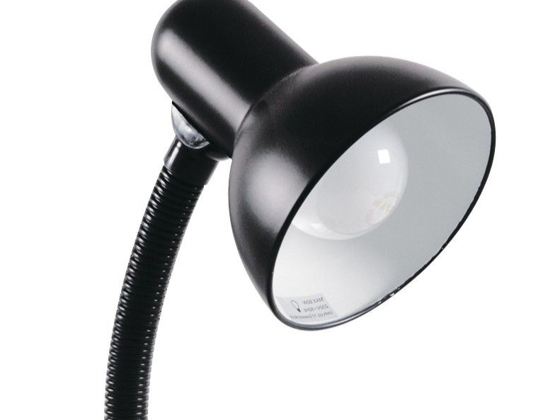

Mengurangi Pemborosan
Menggunakan listrik seperlunya membantu menghindari energi terbuang saat tidak dibutuhkan.
BELAJAR HIDUP LEBIH RAMAH LINGKUNGAN
Kenali pentingnya energi dan mulai kebiasaan sederhana untuk menggunakannya dengan lebih bijak setiap hari.

Hemat energi adalah upaya menggunakan energi secara bijak dan menghindari pemakaian yang tidak diperlukan. Contohnya, mematikan lampu saat ruangan tidak digunakan dan memanfaatkan cahaya matahari pada siang hari.
MULAI DARI RUMAH
Kebiasaan kecil yang dilakukan setiap hari dapat membantu kita menggunakan energi secara lebih bertanggung jawab.

Menggunakan listrik seperlunya membantu menghindari energi terbuang saat tidak dibutuhkan.

Mematikan peralatan yang tidak digunakan membantu mengelola pemakaian listrik di rumah.
Penghematan energi dapat membantu mengurangi emisi apabila energi yang digunakan berasal dari sumber yang menghasilkan emisi.
KENALI KEBIASAANNYA
Perhatikan kebiasaan sehari-hari berikut dan mulai lakukan perubahan sederhana.
Solusi: Matikan lampu ketika meninggalkan ruangan dan manfaatkan cahaya matahari pada siang hari.
Solusi: Matikan televisi, komputer, atau peralatan lain saat tidak diperlukan.
Solusi: Atur suhu AC secara wajar, tutup pintu dan jendela saat AC menyala, serta bersihkan filter sesuai petunjuk.
TUJUAN PEMBANGUNAN BERKELANJUTAN
Kebiasaan hemat energi berkaitan dengan upaya membangun masa depan yang lebih berkelanjutan.
SDG 7 mendorong akses terhadap energi yang terjangkau, andal, berkelanjutan, dan modern. Penggunaan energi secara efisien merupakan salah satu hal penting dalam mendukung tujuan ini.
Pelajari SDG 7SDG 13 berfokus pada tindakan untuk menghadapi perubahan iklim. Menghemat energi dapat menjadi salah satu kebiasaan pendukung, terutama ketika membantu mengurangi penggunaan energi yang menghasilkan emisi.
Pelajari SDG 13Materi pada halaman ini disusun sebagai edukasi dasar mengenai kebiasaan hemat energi dengan merujuk pada sumber informasi berikut.